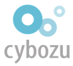
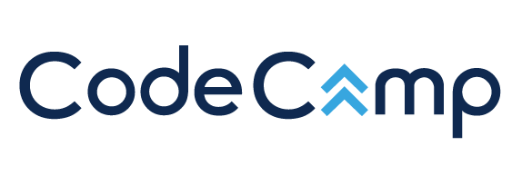
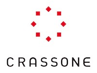
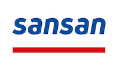
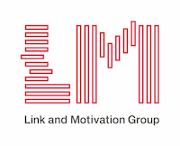

こんにちは世界！
Rails Girls 2ndを愛媛県で開催します！
２日間の無料ワークショップを通して、Ruby on Railsのすてきな世界を私たちと一緒に体験しましょう！
参加者申し込みサイトオープンしました！
参加者の受け付けは終了しました。
Rails Girls comes to Ehime! During the free two-day workshop we'll dive into the magical world of Ruby on Rails.
概要 コーチに教えてもらいながらプログラムを設計して、プロトタイプを作り、コーディングします。
必要なもの 自分のノートパソコン、やる気とキラリと光るイマジネーションを持ってきてください！
コーチ
コーチの受け付けは終了しました。
| 18:30開場 ～ |
インストール・ディまずは、参加者同士、お互いに知り合いになりましょう。ご自分のノートパソコンをお持ちください。 それぞれのパソコンにRubyとRailsをインストールし、Rubyプログラミングの最初の一歩をコーチとともに始めてみましょう。 |
|---|
| 9:30 - 10:30 |
レジストレーション、コーヒー金曜日にRuby on Railsのインストールトラブルがあれば、朝のうちに解決しておきましょう。 金曜日にすべてうまく行ったひとは参加しなくてもOKです。 |
|---|---|
| 10:30 - 10:45 |
開会一日の流れの説明。オーガナイザーから一言。 |
| 10:45 - 12:30 |
ワークショップ |
| 12:30 - 13:30 | ランチ |
| 13:30 - 14:00 |
ライトニングトークス |
| 14:00 - 16:30 |
ワークショップ |
| 16:30 - 17:30頃 |
アフター・パーティ参加者、コーチ、スタッフによるパーティです。ワークショップで聞き損ねたことや RubyやRailsのこと、ステップアップの方法など、コーチに気軽に質問してみましょう。 |
参加費はどのくらいかかりますか？
無料です。申し込むときにはわくわくした気持ちだけあればいいです。
どのような人が参加するのでしょうか？
コンピュータを使ったことがある女性ならだれでも参加できます。
これまでに開催されたRails Girlsイベントには様々な年齢の女性がやってきました。
ご自分のノートパソコンをお持ちください。
男性も参加できますか？
参加できます。ただし、必ずウェブアプリを作りたがっている女性と一緒に参加してください。
申し込み人数が多い場合はお断りすることがありますので、ご了承ください。
日程:
2020年2月7日(金) 18:30開場 ～
2020年2月8日(土) 9:30開場 ～
会場:
サイボウズ 松山オフィス
〒790-0002 愛媛県松山市二番町3-7-12 QUALITA MATSUYAMA 3階
伊予鉄道市内電車: 「大街道」徒歩3分
Rails Girls Ehimeをご支援いただけるパートナーを募集しています。 ご支援頂ける方はShiinoへDMお願いします。

サイボウズ株式会社
「チームワークあふれる社会を創る」という理念のもと、チームワークを支えるクラウドサービス「cybozu.com」を開発、運用しています。
データセンター構築からフロントエンド開発までを自社で手がけているのが大きな特徴です。
モブプログラミングなどの新しい開発手法や、在宅勤務などの柔軟な働き方にもチャレンジしています。
ハートレイルズ は、新規事業に伴うウェブサービス、スマホアプリに特化した企画開発会社です。 社員全員がリモートワークで働いており、理念として「多様な生き方を支える未来をつくる」を掲げています。 愛媛在住のエンジニアも活躍中です。
株式会社ソニックガーデン は、お客さまのビジネスの成長をソフトウエアで支える「納品のない受託開発」を提供しています。 お客さまのパートナーとして ビジネスの立ち上げに必要なソフトウェアの 企画開発から運用まですべて請け負います。
 GMOペパボ株式会社は「もっとおもしろくできる」を企業理念に、
自分だけのオリジナルグッズを手軽に作成・販売できる「SUZURI」や
国内最大のハンドメイドマーケット「minne」など様々なサービスを提供しています。
RubyやRailsを採用した開発環境で「いるだけで成長できる環境」をコンセプトに
エンジニアの人材育成やコミュニティへの支援を積極的に行っています。
GMOペパボ株式会社は「もっとおもしろくできる」を企業理念に、
自分だけのオリジナルグッズを手軽に作成・販売できる「SUZURI」や
国内最大のハンドメイドマーケット「minne」など様々なサービスを提供しています。
RubyやRailsを採用した開発環境で「いるだけで成長できる環境」をコンセプトに
エンジニアの人材育成やコミュニティへの支援を積極的に行っています。
アトトック は「アイデアをカタチにする」をミッションとし、自分たちが心の底から満足できる製品を開発しています。 理想の姿を明確に描き、夢を叶えるお手伝いをするためのライフスタイルを提案するサービス「atotok」、 そして「10Years」「niko😄log」を提供しています。

コードキャンプ株式会社
オンラインのプログラミング家庭教師「CodeCamp」はプログラミングを学びたい人が、時間と場所にとらわれずにプロからのマンツーマン指導が受けられる学習サービスです。
Ruby on Railsを学習してウェブアプリを制作したい方やRubyを学習してエンジニアとして活躍したい全て人の挑戦を応援しています。
Ruby以外にも、Java, PHP, スマホアプリ, Photoshop, illustrator,,,,etc など多くの学習に対応。
 クラッソーネは、「豊かな暮らしで人々を笑顔に」をミッションに掲げ、 家づくり分野でユーザー（施主様）とパートナー（建築工事会社）のマッチングサービス 「くらそうね」を展開しています。 現在、ユーザーが簡単に工事会社を比較でき、安心して工事を発注できる、解体工事マッチングプラットフォームを、 Ruby on Railsで開発しています。この新サービスを一緒につくっていただける仲間を募集中です。
 Sansan株式会社は、「出会いからイノベーションを生み出す」をミッションに掲げ、 法人向け名刺管理サービス「Sansan」と個人向け名刺アプリ「Eight」を提供しています。「Eight」はRuby on Railsで開発しており、 取り込んだ名刺から、いつでも活用できるあなただけのビジネスネットワークを構築することができます。 Rails Girlsでの皆さんとの「出会い」を楽しみにしています。
 株式会社SmartHR社会保険・労働保険それ自体はすばらしい制度ですが、
手続きの不便さ、煩雑さ、わかりづらさは否めません。私たちはこのアナログな領域を、
テクノロジーと創意工夫でもっとシンプル、かんたん、便利に変えていきます。
経営者は本業に、人事担当者は採用や制度づくりに集中でき、従業員はよりよい環境で安心して働くことができる社会を 私達は SmartHR で実現します。
株式会社SmartHR社会保険・労働保険それ自体はすばらしい制度ですが、
手続きの不便さ、煩雑さ、わかりづらさは否めません。私たちはこのアナログな領域を、
テクノロジーと創意工夫でもっとシンプル、かんたん、便利に変えていきます。
経営者は本業に、人事担当者は採用や制度づくりに集中でき、従業員はよりよい環境で安心して働くことができる社会を 私達は SmartHR で実現します。
メドピアは現役医師が経営するヘルステックカンパニーです。 国内医師の3人に1人が参加するコミュニティサイトで医師を支援すると共に、医師や管理栄養士のネットワークを活かして一般向けのヘルスケアサービスを展開しています。
 株式会社アカツキは、心が求める活動がみんなの幸せの原動力となる世界「A Heart Driven World.」をビジョンとして掲げ、
エンターテインメントをグローバルに展開しています。 アカツキエンジニアは「テクノロジーを活用して、人の感情をもっと豊かに動かし、
ワクワクさせることができる」という信念のもとRubyなどのOSSを活用し、また積極的に貢献しています。
株式会社アカツキは、心が求める活動がみんなの幸せの原動力となる世界「A Heart Driven World.」をビジョンとして掲げ、
エンターテインメントをグローバルに展開しています。 アカツキエンジニアは「テクノロジーを活用して、人の感情をもっと豊かに動かし、
ワクワクさせることができる」という信念のもとRubyなどのOSSを活用し、また積極的に貢献しています。
 esa は、「情報を育てる」をコンセプトに作られた、自律的なチームのための情報共有サービスです。
日報や議事録、仕様書やマニュアル、アイデアの共有など様々な種類の情報共有に適しており、Markdownで書ける使い勝手のよいインターフェイスで、
チームのより良いコラボレーションをサポートします。
esa は、「情報を育てる」をコンセプトに作られた、自律的なチームのための情報共有サービスです。
日報や議事録、仕様書やマニュアル、アイデアの共有など様々な種類の情報共有に適しており、Markdownで書ける使い勝手のよいインターフェイスで、
チームのより良いコラボレーションをサポートします。
 リンクアンドモチベーションは、世界初の「モチベーション」にフォーカスした企業です。 これまでは組織人事コンサルティングや研修を提供する企業でしたが、これからは「すべての組織と個人の変革」に向けてテクノロジー企業に転換しようとしています。 この第二創業期を共に創って頂けるエンジニア・プロダクトマネジャー・デザイナーの方々を積極募集しています。
私たち永和システムマネジメントは Ruby や Ruby on Railsを活用したアプリケーションをアジャイルに構築できる日本有数のソフトウェア受託企業です。 私たちはお客さまの投資を最大化すべく研鑽を続けています。また、Rubyコミュニティの支援も2006年から積極的に行っています。
GitHub はソフトウェアの共同開発をするための最高の環境を開発・提供しています。 1000 万人以上のユーザーが友だち、同僚、クラスメートと、時にはまったく知らない人とでさえ、コードなどを共有して素晴らしいプロジェクトを行っています。
 Aya Shiino
Aya Shiino Kazuaki Ueda
Kazuaki Ueda Chihiro Nishihara
Chihiro Nishihara ramusara
ramusara Masafumi OKURA
Masafumi OKURA Hiroshi Shimoju
Hiroshi Shimoju